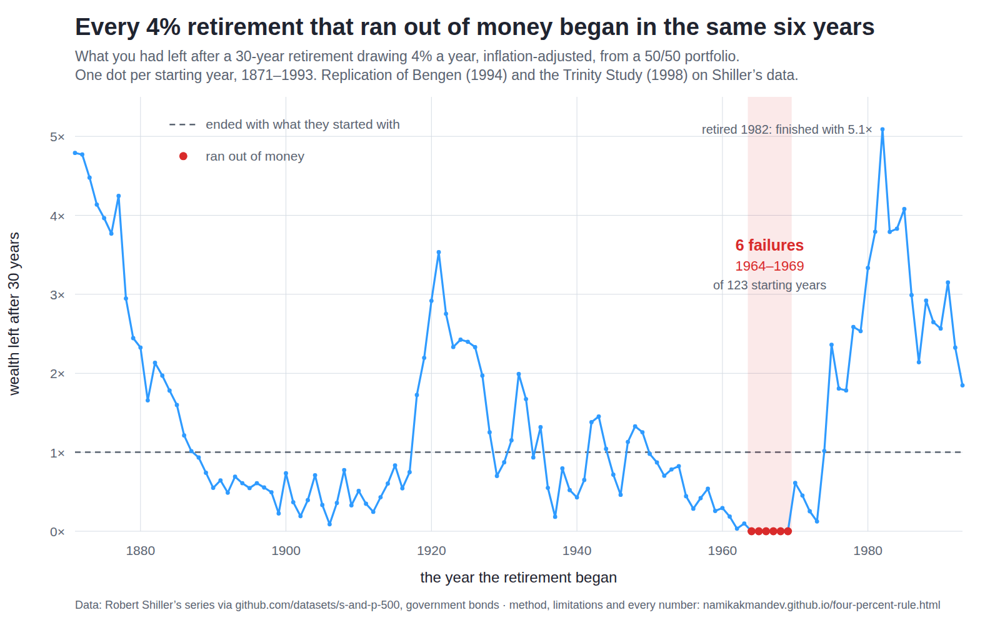

The 4% rule, replicated
Two papers created the most quoted number in personal finance. Bengen (1994) found that a retiree drawing 4% of the starting portfolio, raised each year with inflation, never ran out inside 30 years in any year on record. Cooley, Hubbard & Walz (1998) — the Trinity Study — put success rates on it: 95% for a 50/50 portfolio, 98% for 75/25. This page re-runs both on Robert Shiller's open data, 1871–2022, and publishes every number, the method, its limitations and the scripts. The result: the published figures reproduce — but only once you add back a bond assumption the rule is never quoted with. On government bonds the rate that never failed is 3.60%, not 4%.

What was left after 30 years, by the year the retirement began. Six of
123 starting years ran out of money, and all six fall in one six-year cluster. The
line is smooth because neighbouring retirements share 29 of their 30 years —
which is the whole problem with counting them as separate tests. Regenerate with
python3 scripts/retire_chart.py.
1
It replicates — on their bonds
On government bonds I get 93% (50/50) and 95% (75/25) against their published 95% and 98% — one failure out each. The Trinity Study held long-term corporate bonds. Add a half-point of credit spread and the 50/50 figure reproduces exactly; add one and a half points and both do.
2
The number is 3.6%, and it is a convention
The highest rate that never failed on government bonds is 3.60% — the same in 1926–1995, through 2022, and across the full 152 years. Moving the withdrawal from the start of the year to the end, a pure modelling choice, moves it to 3.91%. A 1% fee moves it to 3.18%.
3
Six retirements set the rule
Every failure in 152 years began between 1964 and 1969. And 68 overlapping 30-year windows are three non-overlapping ones. The rule is not backed by a century of evidence; it is backed by roughly three retirements, one of which went badly.
Stage 1 — the replication
The Trinity Study's sample is 1926–1995, which is 41 overlapping 30-year windows. Their 95% and 98% are therefore 2 failures and 1 failure. That is the target.
| Portfolio | Published (1998) | This replication | Failures | Windows | Failing retirement years |
|---|---|---|---|---|---|
| 50/50 stocks/bonds | 95% | 92.7% | 3 | 41 | 1964, 1965, 1966 |
| 75/25 stocks/bonds | 98% | 95.1% | 2 | 41 | 1965, 1966 |
One failure out, both times. The suspect is the asset: they held long-term high-grade corporate bonds, and the only public series is government. Adding the missing credit spread back to the bond leg:
| Credit spread over government | 50/50 | 75/25 | |
|---|---|---|---|
| 0.0% (government bonds) | 92.7% | 95.1% | what the public data gives |
| 0.5% | 95.1% | 95.1% | reproduces the published 50/50 figure |
| 1.0% | 95.1% | 95.1% | |
| 1.5% | 97.6% | 97.6% | reproduces both published figures |
| 2.0% | 100% | 97.6% |
A half to one and a half points is an ordinary historical high-grade spread, so the replication succeeds. The finding is what the condition attached to it: the famous 95% assumes the retiree holds corporate credit risk for thirty years and keeps holding it through every recession. Nobody quotes the rule that way. Everything below stays on government bonds, which is the conservative reading.
Stage 2 — the retest, with 27 years they never saw
The 1998 paper stops in 1995. Every retirement beginning in 1966 or later was still running when it was published. Those windows have since finished, and they contain 2000–02, 2008 and 2022.
| Portfolio | 1926–1995 | Through 2022 | Windows added | Failures now |
|---|---|---|---|---|
| 50/50 | 92.7% | 91.2% | +27 | 1964–1969, six in all |
| 75/25 | 95.1% | 94.1% | +27 | 1965, 1966, 1968, 1969 |
The rule survives its own extension, which is the headline anyone quoting it should want to hear. Note what did not break it: no retirement beginning in the 1970s, 1980s or 1990s failed, including everyone who retired straight into the 2000–02 and 2008 crashes.
What the rule does not say
Success rates by withdrawal rate, 30 years, 1926–2022, government bonds. The middle column is the rule as published; the two either side are the same test with one assumption changed.
| Withdrawal rate | 50/50, 30 years | 75/25, 30 years | 50/50 after a 1% fee | 50/50 over 50 years |
|---|---|---|---|---|
| 3.0% | 100% | 100% | 100% | 100% |
| 3.5% | 100% | 100% | 91% | 83% |
| 4.0% | 91% | 94% | 78% | 50% |
| 4.5% | 79% | 87% | 65% | 33% |
| 5.0% | 68% | 74% | 56% | 17% |
| 5.5% | 56% | 68% | 43% | 8% |
| 6.0% | 46% | 62% | 31% | 0% |
| 7.0% | 25% | 49% | 15% | 0% |
“Success” means the portfolio did not hit zero. It does not mean it held its value. Of the 62 retirements that succeeded at 4%, 50/50, 1926–2022:
| Outcome after 30 years, in real terms | Multiple of starting capital |
|---|---|
| Worst tenth of successes | 0.26× |
| Median | 1.13× |
| Best tenth | 3.15× |
| Ended poorer than they started | 29 of 62 (47%) |
One retiree finished with five times their capital and another with a quarter of it. Both count as a success. The rule promises you will not run out; it says nothing whatever about what you will have, and the spread is enormous.
And the 4% itself is partly a convention. The highest rate that never failed — Bengen's SAFEMAX — under each assumption:
| Assumption | SAFEMAX | 4% success | What changed |
|---|---|---|---|
| Baseline (50/50, government bonds) | 3.60% | 91% | withdrawal at start of year, no fees |
| Withdraw at year end instead | 3.91% | 97% | a pure modelling choice, worth 0.31pp |
| 5-year bonds instead of 10-year | 3.80% | 97% | shorter duration, less 1970s damage |
| 0.5% annual fee | 3.39% | 87% | a cheap index fund and an adviser |
| 1.0% annual fee | 3.18% | 78% | a typical retail all-in cost |
| 2.0% annual fee | 2.80% | 65% | an expensive one |
| 75/25 instead of 50/50 | 3.70% | 94% | more equity, slightly safer here |
The gap between 3.18% and 3.91% is not economics. It is where you put the withdrawal in the year and what you pay your fund manager.
Method
- The withdrawal is fixed in real terms. Take 4% of the starting portfolio in year one, then raise that amount by inflation every year regardless of what the portfolio does. That is what both papers modelled, and it is what makes the rule able to fail at all — a rule that took 4% of the current balance can never run out.
- One simulation per starting year. Rebalance annually to the target mix, withdraw at the start of the year, and record whether the balance ever reached zero inside the horizon.
- Data. Shiller's monthly series, January to January: S&P 500 total return with dividends reinvested, CPI for the inflation adjustment, and a constant-maturity government bond return built by buying at par and selling a year later one year shorter at the new yield.
success = balance > 0 for all 30 years · SAFEMAX = highest rate with zero failures
Limitations
- Neither paper's bond series is public. Bengen used intermediate-term Treasuries; the Trinity Study used long-term high-grade corporate bonds. This uses government bonds at 10 and 5 years. That is the single biggest source of difference from the published numbers, and stage 1 quantifies it rather than hiding it.
- One country, and the lucky one. Every number here is US. The United States had the best-performing large equity market of the twentieth century, and a rule calibrated on the winner is calibrated on a survivor. The published international work — Pfau (2010), Estrada (2017) — finds materially lower safe rates in most other developed markets. That literature is cited, not reproduced: no comparable long-run international total-return series is openly available, so nothing on this page tests it.
- The windows overlap almost completely. 68 overlapping 30-year windows contain 3 non-overlapping ones. Neighbouring retirements share 29 of their 30 years, so "91% of historical periods" is not 68 independent trials and no confidence interval is quoted here for exactly that reason.
- The failure record is one cohort. All six failures began 1964–1969. The rule's entire downside evidence is a single episode — high valuations followed by the 1970s inflation. Whether that is the worst case possible, or merely the worst case that happened, the data cannot say.
- Taxes are not modelled. Neither original paper modelled them either. In a taxable account the effective withdrawal is higher than the headline rate.
- Annual steps, January to January. Real retirees withdraw monthly and retire in months other than January. Annual steps understate the damage of a crash early in a year.
- The data ends in 2022. The public mirror carries prices to the present but Shiller's dividend, CPI and yield columns lag, so the last complete return year is 2022 and the last 30-year window begins in 1993.
This is not financial advice. It is a replication of two published papers on public data, and it describes what happened to a mechanical rule in the past in one country. It is not a recommendation about anyone's savings, and a historical success rate is not a probability that applies to your retirement.
The scripts, in full
Nothing is elided. These are the three files that produced every number and the chart on this page, exactly as they run.
fetch_retirement.py — building the return series from Shiller's data (146 lines)
#!/usr/bin/env python3
"""Build the annual return series behind the 4% rule, from Robert Shiller's data.
Source: the open mirror of Robert Shiller's monthly series (github.com/datasets/
s-and-p-500) — S&P 500 price, dividend, CPI and the long government bond yield,
January 1871 onward. This is the public stand-in for the inputs Bengen (1994)
and Cooley, Hubbard & Walz (1998, "the Trinity Study") used; neither paper's
exact bond series is public, which is the main caveat this study carries.
Produces one row per calendar year, January to January:
stock S&P 500 total return: price change plus the dividends paid that year
bond total return on a constant-maturity government bond, constructed by
buying it at par and selling it a year later one year shorter, at the
new yield. Built at 10 and at 5 years so the analysis can show what
the bond assumption is worth.
cpi inflation, which is what the withdrawal is indexed to
Usage: python3 scripts/fetch_retirement.py
"""
import argparse, csv, io, json, os, sys, urllib.request
from datetime import date
SRC = ("https://raw.githubusercontent.com/datasets/s-and-p-500/main/data/"
"data.csv")
MATURITIES = (10, 5)
def bond_price(coupon, years, yld):
"""Price of an annual-coupon bond, face 1."""
if yld == 0:
return coupon * years + 1.0
disc = (1 + yld) ** -years
return coupon * (1 - disc) / yld + disc
def bond_total_return(y0, y1, maturity):
"""Buy at par, hold one year, sell one year shorter at the new yield.
This is the standard constant-maturity construction. It is a proxy: Bengen
used intermediate Treasuries and the Trinity Study used long-term corporate
bonds, and neither series is public. Running it at two maturities is how
this study shows what the choice costs.
"""
return bond_price(y0, maturity - 1, y1) + y0 - 1.0
def load_rows(url):
print(f" downloading {url} ...")
with urllib.request.urlopen(url, timeout=300) as r:
text = r.read().decode("utf-8")
return list(csv.DictReader(io.StringIO(text)))
def num(row, key):
"""Shiller's mirror writes 0 for 'not filled in yet'; treat that as missing."""
v = row.get(key, "")
try:
f = float(v)
except (TypeError, ValueError):
return None
return None if f == 0 else f
def main(argv=None):
ap = argparse.ArgumentParser(description=__doc__,
formatter_class=argparse.RawDescriptionHelpFormatter)
ap.add_argument("--out", default="data/retire-us.json")
args = ap.parse_args(argv)
print("Shiller monthly series")
rows = load_rows(SRC)
print(f" read {len(rows):,} months, "
f"{rows[0]['Date']} to {rows[-1]['Date']}")
by_month = {}
for r in rows:
y, m, _ = r["Date"].split("-")
by_month[(int(y), int(m))] = r
years = sorted({y for y, _ in by_month})
out = []
for y in years:
jan0, jan1 = by_month.get((y, 1)), by_month.get((y + 1, 1))
if not jan0 or not jan1:
continue
p0, p1 = num(jan0, "SP500"), num(jan1, "SP500")
c0, c1 = (num(jan0, "Consumer Price Index"),
num(jan1, "Consumer Price Index"))
y0, y1 = (num(jan0, "Long Interest Rate"),
num(jan1, "Long Interest Rate"))
# Shiller's Dividend column is the annualised rate in force each month;
# averaging the twelve months gives the dividend actually paid that year.
divs = [num(by_month[(y, m)], "Dividend") for m in range(1, 13)
if (y, m) in by_month]
divs = [d for d in divs if d is not None]
if not all((p0, p1, c0, c1, y0, y1)) or len(divs) < 12:
continue
d = sum(divs) / len(divs)
row = {"year": y,
"stock": round((p1 + d) / p0 - 1, 6),
"cpi": round(c1 / c0 - 1, 6)}
for mat in MATURITIES:
row[f"bond{mat}"] = round(
bond_total_return(y0 / 100.0, y1 / 100.0, mat), 6)
out.append(row)
doc = {
"source": "Robert Shiller, monthly US stock market and CPI data",
"source_url": "https://github.com/datasets/s-and-p-500",
"note": ("Public mirror of Shiller's series. Prices run to the present, "
"but the dividend, CPI and yield columns lag, so complete "
"return years end earlier — see coverage below."),
"fetched_by": "scripts/fetch_retirement.py",
"fetched_at": date.today().isoformat(),
"definitions": {
"stock": "S&P 500 total return, January to January, dividends included",
"bond10": "constant-maturity 10-year government bond total return",
"bond5": "same construction at 5 years, to price the assumption",
"cpi": "January-to-January inflation, what the withdrawal is indexed to",
},
"caveat": ("Bengen (1994) used intermediate-term Treasuries; Cooley, "
"Hubbard & Walz (1998) used long-term high-grade corporate "
"bonds. Neither series is public. These are government-bond "
"proxies and the replication is only as good as that."),
"coverage": {"first_year": out[0]["year"], "last_year": out[-1]["year"],
"n_years": len(out)},
"years": out,
}
os.makedirs(os.path.dirname(args.out) or ".", exist_ok=True)
with open(args.out, "w") as fh:
json.dump(doc, fh, indent=1)
print(f" built {len(out)} complete return years: "
f"{out[0]['year']}–{out[-1]['year']}")
print(f" wrote {args.out} ({os.path.getsize(args.out):,} bytes)")
for r in out[:2] + out[-2:]:
print(f" {r['year']} stock={r['stock']:+.4f} "
f"bond10={r['bond10']:+.4f} cpi={r['cpi']:+.4f}")
return 0
if __name__ == "__main__":
sys.exit(main())
retire_4pct.py — the replication and the retest (339 lines)
#!/usr/bin/env python3
"""Replication of the 4% rule, then a retest with the data the authors lacked.
Two papers, one rule:
Bengen (1994), "Determining Withdrawal Rates Using Historical Data" — a
retiree drawing 4% of the starting portfolio, raised each year with
inflation, from a stock/bond mix, never ran out inside 30 years in any
starting year on record.
Cooley, Hubbard & Walz (1998), the "Trinity Study" — the same exercise
reported as success rates. At 4% over 30 years, inflation-adjusted, they
published 95% for a 50/50 portfolio and 98% for 75/25, over 1926-1995.
Their sample is 41 overlapping 30-year windows, so those figures are 2 failures
and 1 failure respectively. That is the target this replication has to hit.
It lands one failure short of each, and the reason is the bond series. They held
long-term high-grade CORPORATE bonds; the only public series is government. Add
the credit spread back and the published figures reproduce exactly — which is
itself the finding, because the rule is never quoted with "and you must hold
corporate credit risk" attached.
Stage 1 replicates their window. Stage 2 asks the question they could not: the
rule has since been quoted for twenty-seven more years of history, including
2000-02, 2008 and 2022. Does it still hold?
Stdlib only, deterministic.
python3 scripts/retire_4pct.py
"""
import json, sys
from collections import defaultdict
PANEL = "data/retire-us.json"
TRINITY_FIRST, TRINITY_LAST = 1926, 1995 # the 1998 paper's sample
PUBLISHED = {0.50: 0.95, 0.75: 0.98} # their 4%/30y figures
# ---------------------------------------------------------------- simulation
def simulate(rows, i0, rate, horizon, alloc, fee=0.0, bond="bond10",
timing="start", spread=0.0):
"""One retirement. -> (survived, ending balance in start-year money).
The withdrawal is a fixed share of the STARTING portfolio, raised by
inflation every year — not a share of the current balance. That is what
makes the rule able to fail at all, and it is what both papers modelled.
"""
bal, draw, infl = 1.0, rate, 1.0
for k in range(horizon):
r = rows[i0 + k]
if timing == "start":
bal -= draw
if bal <= 0:
return False, 0.0
bal *= (1 + alloc * r["stock"]
+ (1 - alloc) * (r[bond] + spread) - fee)
if timing == "end":
bal -= draw
if bal <= 0:
return False, 0.0
infl *= 1 + r["cpi"]
draw *= 1 + r["cpi"]
return True, bal / infl
def windows(rows, horizon, first=None, last=None):
"""Every starting year whose full horizon fits inside [first, last]."""
out = []
for i, r in enumerate(rows):
if first is not None and r["year"] < first:
continue
if i + horizon > len(rows):
break
if last is not None and rows[i + horizon - 1]["year"] > last:
break
out.append(i)
return out
def run(rows, rate, horizon, alloc, first=None, last=None, **kw):
idx = windows(rows, horizon, first, last)
res = [(rows[i]["year"],) + simulate(rows, i, rate, horizon, alloc, **kw)
for i in idx]
ok = [r for r in res if r[1]]
return {"n": len(res), "fail": len(res) - len(ok),
"rate": len(ok) / len(res) if res else float("nan"),
"ends": sorted(r[2] for r in ok),
"failures": [r[0] for r in res if not r[1]], "all": res}
def pct(xs, p):
if not xs:
return float("nan")
return xs[min(len(xs) - 1, int(p * len(xs)))]
def safemax(rows, horizon, alloc, first=None, last=None, **kw):
"""Highest withdrawal rate (to 0.01pp) at which no window failed."""
lo, hi = 0.0, 0.15
for _ in range(40):
mid = (lo + hi) / 2
if run(rows, mid, horizon, alloc, first, last, **kw)["fail"] == 0:
lo = mid
else:
hi = mid
return lo
# ---------------------------------------------------------------- report
def hr(t):
print(f"\n{'=' * 78}\n{t}\n{'=' * 78}")
def grid(rows, rates, allocs, horizon, first=None, last=None, **kw):
print(f" {'withdrawal':<12}" + "".join(f"{int(a * 100):>7}/{int(100 - a * 100):<7}"
for a in allocs))
for w in rates:
cells = []
for a in allocs:
r = run(rows, w, horizon, a, first, last, **kw)
cells.append(f"{r['rate'] * 100:>6.0f}%{'':7}")
print(f" {w * 100:>9.1f}% " + "".join(cells))
def main():
doc = json.load(open(PANEL))
rows = doc["years"]
cov = doc["coverage"]
hr("0. The data")
print(f" source {doc['source']}")
print(f" mirror {doc['source_url']}")
print(f" coverage {cov['first_year']}–{cov['last_year']} "
f"({cov['n_years']} complete return years)")
print(f" caveat {doc['caveat']}")
hr("1. Replication — the Trinity Study's own window, 1926–1995")
print(" Published: 4% over 30 years, inflation-adjusted, succeeded in 95% of")
print(" periods at 50/50 and 98% at 75/25. Their sample is 41 overlapping")
print(" windows, so that is 2 failures and 1 failure.\n")
for alloc, target in sorted(PUBLISHED.items()):
r = run(rows, 0.04, 30, alloc, TRINITY_FIRST, TRINITY_LAST)
mark = "MATCH" if r["fail"] == round((1 - target) * r["n"]) else "differs"
print(f" {int(alloc * 100)}/{int(100 - alloc * 100)} stocks/bonds: "
f"{r['rate'] * 100:.0f}% success ({r['fail']} failures of "
f"{r['n']} windows) published {target * 100:.0f}% -> {mark}")
if r["failures"]:
print(f" failing retirement years: {r['failures']}")
print("\n the full published-style table, 30 years, inflation-adjusted, "
"1926–1995:")
grid(rows, (0.03, 0.04, 0.05, 0.06, 0.07),
(1.0, 0.75, 0.5, 0.25, 0.0), 30, TRINITY_FIRST, TRINITY_LAST)
hr("1b. Reconciling the gap — what the missing bond series is worth")
print(" Both published figures come out one failure higher than this")
print(" replication. The candidate explanation is the asset: they held")
print(" long-term high-grade corporate bonds, and the public series is")
print(" government. Adding a credit spread back to the bond leg:\n")
print(f" {'spread over govt':<20}{'50/50':>14}{'75/25':>14}")
for sp in (0.0, 0.005, 0.010, 0.015, 0.020):
a = run(rows, 0.04, 30, 0.50, TRINITY_FIRST, TRINITY_LAST, spread=sp)
b = run(rows, 0.04, 30, 0.75, TRINITY_FIRST, TRINITY_LAST, spread=sp)
star = ""
if round(a["rate"], 2) == 0.95 and round(b["rate"], 2) == 0.98:
star = " <- reproduces both"
print(f" {sp * 100:>15.1f}% {a['rate'] * 100:>8.0f}%"
f"{b['rate'] * 100:>13.0f}%{star}")
print("\n published: 95% 98%")
print(" A spread of half a point already reproduces the 50/50 figure,")
print(" and one and a half points reproduces both. Historically that is")
print(" an ordinary high-grade spread, so the replication succeeds — on")
print(" the condition that the retiree holds corporate bonds. Everything")
print(" below stays on government bonds, which is the conservative read.")
hr("2. Bengen's claim — the highest rate that never failed")
for label, first, last in (("1926–1995 (their data)", TRINITY_FIRST, TRINITY_LAST),
("1926–2022 (with what came after)", TRINITY_FIRST, None),
("1871–2022 (everything on record)", None, None)):
for alloc in (0.75, 0.5):
s = safemax(rows, 30, alloc, first, last)
n = run(rows, 0.04, 30, alloc, first, last)
print(f" {label:<34} {int(alloc * 100)}/{int(100 - alloc * 100)}: "
f"SAFEMAX {s * 100:.2f}% "
f"4% success {n['rate'] * 100:.0f}% ({n['n']} windows)")
hr("3. What 'success' actually means")
r = run(rows, 0.04, 30, 0.5, TRINITY_FIRST, None)
ends = r["ends"]
broke = sum(1 for e in ends if e < 1.0)
print(" A 'success' is a portfolio that did not hit zero. It is not a")
print(" portfolio that kept its value. 4%, 30 years, 50/50, 1926–2022:\n")
print(f" success rate {r['rate'] * 100:.0f}% "
f"({r['n']} windows)")
print(f" median ending wealth {pct(ends, 0.5):.2f}x the "
f"starting capital, in real terms")
print(f" worst 10% of outcomes ended at {pct(ends, 0.10):.2f}x")
print(f" best 10% ended at {pct(ends, 0.90):.2f}x")
print(f" ended poorer than they started {broke} of {len(ends)} "
f"({broke / len(ends) * 100:.0f}%)")
print(" The rule's promise is 'you will not run out'. The spread of what")
print(" you actually end with is enormous, and it is not in the promise.")
print("\n 4% is a 30-year answer. It is quoted as if it were permanent:")
for h in (30, 40, 50):
rr = run(rows, 0.04, h, 0.5, TRINITY_FIRST, None)
print(f" {h}-year retirement, 50/50: "
f"{rr['rate'] * 100:>3.0f}% success ({rr['n']} windows)")
print("\n And it is a before-costs answer. The same test with a fee drag:")
for fee in (0.0, 0.005, 0.01, 0.02):
rr = run(rows, 0.04, 30, 0.5, TRINITY_FIRST, None, fee=fee)
s = safemax(rows, 30, 0.5, TRINITY_FIRST, None, fee=fee)
print(f" fee {fee * 100:>4.1f}%/yr: "
f"{rr['rate'] * 100:>3.0f}% success SAFEMAX {s * 100:.2f}%")
hr("4. The retest — 27 years the authors never saw")
print(" The 1998 paper stops in 1995. Every retirement beginning 1966 or")
print(" later was still running when they published. Those windows have")
print(" since completed, and they include 2000-02, 2008 and 2022.\n")
for alloc in (0.75, 0.5):
old = run(rows, 0.04, 30, alloc, TRINITY_FIRST, TRINITY_LAST)
new = run(rows, 0.04, 30, alloc, TRINITY_FIRST, None)
added = new["n"] - old["n"]
print(f" {int(alloc * 100)}/{int(100 - alloc * 100)}: published window "
f"{old['rate'] * 100:.0f}% ({old['n']} windows) -> "
f"through 2022 {new['rate'] * 100:.0f}% ({new['n']} windows, "
f"{added} added)")
if new["failures"]:
print(f" failing retirement years now: {new['failures']}")
hr("5. Robustness")
print(" 5a. how many independent tests is '41 windows' really?")
idx = windows(rows, 30, TRINITY_FIRST, None)
non = [i for k, i in enumerate(idx) if k % 30 == 0]
print(f" overlapping 30-year windows, 1926–2022 {len(idx)}")
print(f" non-overlapping ones {len(non)}")
print(" Consecutive windows share 29 of their 30 years. '95% of all")
print(" historical periods' is three independent retirements and a bit.")
print("\n 5b. the bond series, which is the weakest joint")
for bond in ("bond10", "bond5"):
rr = run(rows, 0.04, 30, 0.5, TRINITY_FIRST, None, bond=bond)
s = safemax(rows, 30, 0.5, TRINITY_FIRST, None, bond=bond)
print(f" {bond:<8} 4% success {rr['rate'] * 100:>3.0f}% "
f"SAFEMAX {s * 100:.2f}%")
print("\n 5c. withdrawing at the start of the year vs the end")
for timing in ("start", "end"):
rr = run(rows, 0.04, 30, 0.5, TRINITY_FIRST, None, timing=timing)
s = safemax(rows, 30, 0.5, TRINITY_FIRST, None, timing=timing)
print(f" {timing:<8} 4% success {rr['rate'] * 100:>3.0f}% "
f"SAFEMAX {s * 100:.2f}%")
print("\n 5d. the whole record, not just the post-1926 one")
for first, label in ((None, "1871–2022"), (TRINITY_FIRST, "1926–2022")):
rr = run(rows, 0.04, 30, 0.5, first, None)
s = safemax(rows, 30, 0.5, first, None)
print(f" {label} 4% success {rr['rate'] * 100:>3.0f}% "
f"SAFEMAX {s * 100:.2f}% ({rr['n']} windows)")
print("\n 5e. the retirements that actually failed, and when they began")
rr = run(rows, 0.04, 30, 0.5, None, None)
print(f" 1871–2022, 4%, 50/50: {rr['fail']} failures of {rr['n']} — "
f"years {rr['failures']}")
# ------------------------------------------------------------------ export
def pack(r):
return {"success": round(r["rate"], 4), "n": r["n"], "fail": r["fail"],
"failures": r["failures"]}
out = {
"generated_by": "scripts/retire_4pct.py",
"source_url": doc["source_url"], "fetched_at": doc["fetched_at"],
"coverage": cov,
"published_targets": {"trinity_50_50": 0.95, "trinity_75_25": 0.98,
"window": f"{TRINITY_FIRST}-{TRINITY_LAST}"},
"replication": {f"{int(a * 100)}_{int(100 - a * 100)}":
pack(run(rows, 0.04, 30, a, TRINITY_FIRST, TRINITY_LAST))
for a in PUBLISHED},
"retest": {f"{int(a * 100)}_{int(100 - a * 100)}":
pack(run(rows, 0.04, 30, a, TRINITY_FIRST, None))
for a in PUBLISHED},
"spread_reconciliation": {
f"{sp:.3f}": {"50_50": round(run(rows, 0.04, 30, 0.50, TRINITY_FIRST,
TRINITY_LAST, spread=sp)["rate"], 4),
"75_25": round(run(rows, 0.04, 30, 0.75, TRINITY_FIRST,
TRINITY_LAST, spread=sp)["rate"], 4)}
for sp in (0.0, 0.005, 0.010, 0.015, 0.020)},
"timing": {t: {"success": round(run(rows, 0.04, 30, 0.5, TRINITY_FIRST,
None, timing=t)["rate"], 4),
"safemax": round(safemax(rows, 30, 0.5, TRINITY_FIRST,
None, timing=t) * 100, 2)}
for t in ("start", "end")},
"windows": {"overlapping": len(windows(rows, 30, TRINITY_FIRST, None)),
"non_overlapping": len(
[i for k, i in enumerate(windows(rows, 30, TRINITY_FIRST,
None)) if k % 30 == 0])},
"all_failures_1871": run(rows, 0.04, 30, 0.5)["failures"],
"by_start_year": [{"year": y, "survived": ok, "ending": round(end, 4)}
for y, ok, end in run(rows, 0.04, 30, 0.5)["all"]],
"safemax": {"trinity_window": round(safemax(rows, 30, 0.5, TRINITY_FIRST,
TRINITY_LAST) * 100, 2),
"through_2022": round(safemax(rows, 30, 0.5, TRINITY_FIRST,
None) * 100, 2),
"full_record": round(safemax(rows, 30, 0.5) * 100, 2)},
"horizons": {str(h): pack(run(rows, 0.04, h, 0.5, TRINITY_FIRST, None))
for h in (30, 40, 50)},
"fees": {str(f): {**pack(run(rows, 0.04, 30, 0.5, TRINITY_FIRST, None,
fee=f)),
"safemax": round(safemax(rows, 30, 0.5, TRINITY_FIRST,
None, fee=f) * 100, 2)}
for f in (0.0, 0.005, 0.01, 0.02)},
"ending_wealth": {"p10": round(pct(ends, 0.10), 3),
"median": round(pct(ends, 0.50), 3),
"p90": round(pct(ends, 0.90), 3),
"share_below_start": round(broke / len(ends), 4),
"n": len(ends)},
"grid": {f"{w:.3f}": {f"{int(a * 100)}": round(
run(rows, w, 30, a, TRINITY_FIRST, None)["rate"], 4)
for a in (1.0, 0.75, 0.5, 0.25, 0.0)}
for w in (0.03, 0.035, 0.04, 0.045, 0.05, 0.055, 0.06, 0.065, 0.07)},
"grid_fee1": {f"{w:.3f}": round(
run(rows, w, 30, 0.5, TRINITY_FIRST, None, fee=0.01)["rate"], 4)
for w in (0.03, 0.035, 0.04, 0.045, 0.05, 0.055, 0.06, 0.065, 0.07)},
"grid_50y": {f"{w:.3f}": round(
run(rows, w, 50, 0.5, TRINITY_FIRST, None)["rate"], 4)
for w in (0.03, 0.035, 0.04, 0.045, 0.05, 0.055, 0.06, 0.065, 0.07)},
}
with open("data/retire-results.json", "w") as fh:
json.dump(out, fh, indent=1)
print("\n wrote data/retire-results.json\n")
if __name__ == "__main__":
sys.exit(main())
retire_chart.py — the chart (143 lines)
#!/usr/bin/env python3
"""The one chart for the 4% rule post.
Ending wealth after a 30-year retirement drawing 4% a year, by the year the
retirement began. The point of the picture: the rule's entire failure record is
one cluster. Six retirements ran out of money and all six started between 1964
and 1969. Everyone else finished with something, and a few finished rich.
It also shows what the rule's overlapping windows really look like — the line is
smooth because neighbouring retirements share 29 of their 30 years, which is why
"95% of all historical periods" is not 95 independent tests.
Numbers come from data/retire-results.json, written by retire_4pct.py.
Reuses the PNG rasteriser from fte_chart.py. Stdlib only.
python3 scripts/retire_chart.py
"""
import json, os, sys
sys.path.insert(0, os.path.dirname(os.path.abspath(__file__)))
from fte_chart import render_png # noqa: E402
BLUE, ORANGE, RED = "#2f9bff", "#ff6500", "#d92b2b"
INK, DIM, GRID, PAPER = "#1f2430", "#5b6472", "#d6dce4", "#ffffff"
W, H = 1600, 1000
L, R, T, B = 120, 60, 155, 150
FONT = ("-apple-system,BlinkMacSystemFont,'Segoe UI',Roboto,'Helvetica Neue',"
"Arial,sans-serif")
YMAX = 5.5
def main():
res = json.load(open("data/retire-results.json"))
pts = res["by_start_year"]
fails = [p for p in pts if not p["survived"]]
y0, y1 = pts[0]["year"], pts[-1]["year"]
pw, ph = W - L - R, H - T - B
def x(year):
return L + (year - y0) / (y1 - y0) * pw
def y(v):
return T + (1 - min(v, YMAX) / YMAX) * ph
o = [f'<svg xmlns="http://www.w3.org/2000/svg" width="{W}" height="{H}" '
f'viewBox="0 0 {W} {H}" font-family="{FONT}">',
f'<rect width="{W}" height="{H}" fill="{PAPER}"/>',
f'<text x="{L}" y="56" font-size="38" font-weight="700" fill="{INK}">'
f'Every 4% retirement that ran out of money began in the same six '
f'years</text>',
f'<text x="{L}" y="98" font-size="23" fill="{DIM}">'
f'What you had left after a 30-year retirement drawing 4% a year, '
f'inflation-adjusted, from a 50/50 portfolio.</text>',
f'<text x="{L}" y="128" font-size="23" fill="{DIM}">'
f'One dot per starting year, {y0}–{y1}. Replication of Bengen '
f'(1994) and the Trinity Study (1998) on Shiller’s data.</text>']
# grid
for i in range(int(YMAX) + 1):
o.append(f'<line x1="{L}" y1="{y(i):.1f}" x2="{L + pw}" y2="{y(i):.1f}" '
f'stroke="{GRID}" stroke-width="1"/>')
o.append(f'<text x="{L - 16}" y="{y(i) + 8:.1f}" font-size="21" '
f'fill="{DIM}" text-anchor="end">{i}×</text>')
for yr in range(1880, y1 + 1, 20):
o.append(f'<line x1="{x(yr):.1f}" y1="{T}" x2="{x(yr):.1f}" '
f'y2="{T + ph}" stroke="{GRID}" stroke-width="1"/>')
o.append(f'<text x="{x(yr):.1f}" y="{T + ph + 38}" font-size="21" '
f'fill="{DIM}" text-anchor="middle">{yr}</text>')
# "you ended with what you started" reference
o.append(f'<line x1="{L}" y1="{y(1):.1f}" x2="{L + pw}" y2="{y(1):.1f}" '
f'stroke="{DIM}" stroke-width="2.5" stroke-dasharray="9 7"/>')
# the failure band
fx0, fx1 = x(fails[0]["year"]) - 6, x(fails[-1]["year"]) + 6
o.append(f'<rect x="{fx0:.1f}" y="{T}" width="{fx1 - fx0:.1f}" '
f'height="{ph}" fill="{RED}" opacity="0.10"/>')
# the series
d = " ".join(f"{'M' if i == 0 else 'L'}{x(p['year']):.1f},{y(p['ending']):.1f}"
for i, p in enumerate(pts))
o.append(f'<path d="{d}" fill="none" stroke="{BLUE}" stroke-width="3.2" '
f'stroke-linejoin="round"/>')
for p in pts:
c = RED if not p["survived"] else BLUE
o.append(f'<circle cx="{x(p["year"]):.1f}" cy="{y(p["ending"]):.1f}" '
f'r="{6.5 if not p["survived"] else 3.4}" fill="{c}"/>')
# callouts
cx = (fx0 + fx1) / 2
o += [f'<text x="{cx:.1f}" y="{y(3.55):.1f}" font-size="25" '
f'font-weight="700" fill="{RED}" text-anchor="middle">'
f'{len(fails)} failures</text>',
f'<text x="{cx:.1f}" y="{y(3.30):.1f}" font-size="22" '
f'fill="{RED}" text-anchor="middle">'
f'{fails[0]["year"]}–{fails[-1]["year"]}</text>',
f'<text x="{cx:.1f}" y="{y(3.06):.1f}" font-size="20" '
f'fill="{DIM}" text-anchor="middle">of {len(pts)} starting '
f'years</text>']
# the best case, labelled to the left so it cannot run off the canvas
best = max(pts, key=lambda p: p["ending"])
o += [f'<text x="{x(best["year"]) - 16:.1f}" y="{y(best["ending"]) + 7:.1f}" '
f'font-size="20" fill="{DIM}" text-anchor="end">retired '
f'{best["year"]}: finished with {best["ending"]:.1f}×</text>']
# legend, parked in the empty top-left block
lx, ly = x(1884), y(5.15)
o += [f'<line x1="{lx:.1f}" y1="{ly:.1f}" x2="{lx + 44:.1f}" y2="{ly:.1f}" '
f'stroke="{DIM}" stroke-width="2.5" stroke-dasharray="9 7"/>',
f'<text x="{lx + 58:.1f}" y="{ly + 7:.1f}" font-size="21" '
f'fill="{DIM}">ended with what they started with</text>',
f'<circle cx="{lx + 22:.1f}" cy="{y(4.75):.1f}" r="6.5" '
f'fill="{RED}"/>',
f'<text x="{lx + 58:.1f}" y="{y(4.75) + 7:.1f}" font-size="21" '
f'fill="{DIM}">ran out of money</text>']
# axis labels + source
o += [f'<text x="{L + pw / 2:.0f}" y="{T + ph + 82}" font-size="24" '
f'fill="{INK}" text-anchor="middle">the year the retirement '
f'began</text>',
f'<text x="30" y="{T + ph / 2:.0f}" font-size="24" fill="{INK}" '
f'text-anchor="middle" transform="rotate(-90 30 '
f'{T + ph / 2:.0f})">wealth left after 30 years</text>',
f'<text x="{L}" y="{H - 26}" font-size="18" fill="{DIM}">'
f'Data: Robert Shiller’s series via github.com/datasets/'
f's-and-p-500, government bonds · method, limitations and '
f'every number: namikakmandev.github.io/four-percent-rule.html</text>',
'</svg>']
os.makedirs("assets/linkedin", exist_ok=True)
path = "assets/linkedin/four-percent-rule.svg"
svg = "\n".join(o)
with open(path, "w") as fh:
fh.write(svg)
print(f"wrote {path} ({os.path.getsize(path):,} bytes)")
render_png(svg, "assets/linkedin/four-percent-rule.png")
return 0
if __name__ == "__main__":
sys.exit(main())
Reproduce it
Everything is open: Shiller publishes the data, this site publishes the code, and the analysis is stdlib-only and deterministic, so every number above reproduces exactly.
python3 scripts/fetch_retirement.py && python3 scripts/retire_4pct.py && python3 scripts/retire_chart.py
Fetch script Replication script Chart script Shiller's data
Related: FiveThirtyEight, tested and The Big Mac index, tested — the same treatment applied to a publication's own open data rather than to a paper.
Replicated papers: William P. Bengen, “Determining Withdrawal Rates Using Historical Data”, Journal of Financial Planning, October 1994; and Philip L. Cooley, Carl M. Hubbard & Daniel T. Walz, “Retirement Savings: Choosing a Withdrawal Rate That Is Sustainable”, AAII Journal, February 1998. Underlying data © Robert J. Shiller, published openly and mirrored at datasets/s-and-p-500. This replication is independent and not affiliated with or endorsed by any of the authors. Method and any errors are mine. Written August 2026.